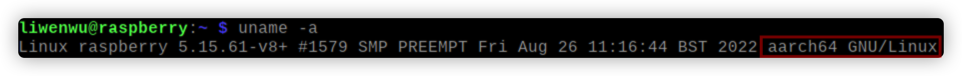
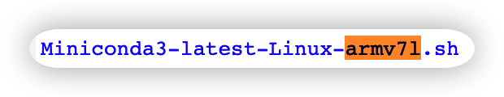

![](http://www.tumblr.com/share/link?url=http%3a%2f%2flocalhost%3a1313%2fblogs%2f%25E6%25A0%2591%25E8%258E%2593%25E6%25B4%25BE%25E5%25AE%2589%25E8%25A3%2585miniconda%2f&name=%e6%a0%91%e8%8e%93%e6%b4%be%e5%ae%89%e8%a3%85miniconda&description=%3cp%3e%e6%a0%91%e8%8e%93%e6%b4%be4B%e5%b7%b2%e7%bb%8f%e5%b0%86%e5%a4%84%e7%90%86%e5%99%a8%e4%bb%8earm%e6%9e%b6%e6%9e%84%e6%8d%a2%e6%88%90%e4%ba%86aarch64%e6%9e%b6%e6%9e%84%ef%bc%8c%e6%89%80%e4%bb%a5%e8%83%bd%e5%a4%9f%e4%bd%bf%e7%94%a8%e6%9c%80%e6%96%b0%e7%9a%84aarch64%e7%89%88%e6%9c%ac%e7%9a%84miniconda%e4%ba%86%e3%80%82%e4%bd%86%e6%98%af%e5%8f%82%e8%80%83%e9%83%a8%e5%88%86%e6%96%87%e7%ab%a0%e5%b9%b6%e5%ae%9e%e6%b5%8b%e5%8f%91%e7%8e%b0%ef%bc%8c%e5%bd%93%e5%89%8d4B%e4%b8%8d%e8%83%bd%e5%85%bc%e5%ae%b9miniconda3%204.10%e4%bb%a5%e4%b8%8a%e7%9a%84%e7%89%88%e6%9c%ac%ef%bc%8c%e6%89%80%e4%bb%a5%e6%9c%ac%e6%96%87%e4%bd%bf%e7%94%a84.9%e7%89%88%e6%9c%ac%e3%80%82%3c%2fp%3e%0a%3cp%3e4B%e4%bb%a5%e4%b8%8b%e7%89%88%e6%9c%ac%e8%af%b7%e5%8f%82%e8%80%83%e6%96%87%e7%ab%a0%e5%86%85%e5%ae%b9%e8%87%aa%e8%a1%8c%e6%9b%b4%e6%94%b9%e5%ae%89%e8%a3%85%e5%86%85%e5%ae%b9%e3%80%82%3c%2fp%3e%0a%3ch2%20id%3d%22%e5%89%8d%e7%bd%ae%e6%ad%a5%e9%aa%a4%22%3e%3c%21--%20raw%20HTML%20omitted%20--%3e%e5%89%8d%e7%bd%ae%e6%ad%a5%e9%aa%a4%3c%21--%20raw%20HTML%20omitted%20--%3e%3c%2fh2%3e%0a%3cp%3e%e6%9c%ac%e9%83%a8%e5%88%86%e4%b8%bb%e8%a6%81%e5%bc%95%e5%af%bc%e8%af%bb%e8%80%85%e6%9f%a5%e7%9c%8b%e6%9c%ac%e6%9c%ba%e7%9a%84%e4%b8%bb%e8%a6%81%e4%bf%a1%e6%81%af%e4%bb%8e%e8%80%8c%e5%8c%b9%e9%85%8d%e6%9c%80%e4%bd%b3%e7%89%88%e6%9c%ac%e3%80%82%3c%2fp%3e%0a%3ch3%20id%3d%221---%e6%9f%a5%e7%9c%8b%e6%9c%ac%e6%9c%ba%e5%a4%84%e7%90%86%e5%99%a8%e6%9e%b6%e6%9e%84%22%3e1%20%20%20%3cstrong%3e%e6%9f%a5%e7%9c%8b%e6%9c%ac%e6%9c%ba%e5%a4%84%e7%90%86%e5%99%a8%e6%9e%b6%e6%9e%84%3c%2fstrong%3e%3c%2fh3%3e%0a%3cdiv%20class%3d%22highlight%22%3e%3cpre%20tabindex%3d%220%22%20style%3d%22color%3a%23f8f8f2%3bbackground-color%3a%23282a36%3b-moz-tab-size%3a4%3b-o-tab-size%3a4%3btab-size%3a4%3b%22%3e%3ccode%20class%3d%22language-shell%22%20data-lang%3d%22shell%22%3e%3cspan%20style%3d%22display%3aflex%3b%22%3e%3cspan%20style%3d%22white-space%3apre%3b-webkit-user-select%3anone%3buser-select%3anone%3bmargin-right%3a0.4em%3bpadding%3a0%200.4em%200%200.4em%3bcolor%3a%237f7f7f%22%3e1%3c%2fspan%3e%3cspan%3euname%20-a%0a%3c%2fspan%3e%3c%2fspan%3e%3c%2fcode%3e%3c%2fpre%3e%3c%2fdiv%3e%3cp%3e%3cimg%20src%3d%22uname.png%22%20alt%3d%22umane%22%3e%3c%2fp%3e%0a%3cp%3e%e7%ba%a2%e6%a1%86%e7%9a%84%e9%82%a3%e4%b8%80%e4%b8%b2%e5%b0%b1%e6%98%af%e4%bd%a0%e6%89%8b%e4%b8%8a%e6%a0%91%e8%8e%93%e6%b4%be%e7%9a%84%e6%9e%b6%e6%9e%84%e3%80%82%e5%a6%82%e6%9e%9c%e6%98%af4B%e5%b9%b6%e4%b8%94%e7%94%a8%e7%9a%84%3ca%20href%3d%22https%3a%2f%2fwww.raspberrypi.com%2fsoftware%2f%22%3eImager%3c%2fa%3e%e5%ae%89%e8%a3%85%e7%9a%84OS%e7%9a%84%e8%af%9d%e8%af%a6%e8%a7%81%e6%96%87%e7%ab%a0%3ca%20href%3d%22https%3a%2f%2fwoofle.space%2fblogs%2f%25E5%2588%259D%25E8%25A7%2581%25E6%25A0%2591%25E8%258E%2593%25E6%25B4%25BE%25E7%25B3%25BB%25E7%25BB%259F%25E5%25AE%2589%25E8%25A3%2585%22%3e%e5%88%9d%e8%a7%81%e6%a0%91%e8%8e%93%e6%b4%be%ef%bc%9a%e7%b3%bb%e7%bb%9f%e5%ae%89%e8%a3%85%3c%2fa%3e%ef%bc%8c%e6%98%be%e7%a4%ba%e7%9a%84%e5%86%85%e5%ae%b9%e8%b7%9f%e6%9c%ac%e6%96%87%e7%9a%84%e5%ba%94%e8%af%a5%e6%98%af%e5%b7%ae%e4%b8%8d%e5%a4%9a%e7%9a%84%e3%80%82%e5%a6%82%e6%9e%9c%e6%98%af%e8%80%81%e7%89%88%e6%9c%ac%e7%9a%84%e6%a0%91%e8%8e%93%e6%b4%be%ef%bc%8c%e9%82%a3%e4%b9%88%e6%98%be%e7%a4%ba%e7%9a%84%e5%86%85%e5%ae%b9%e5%8f%af%e8%83%bd%e5%a6%82%e4%b8%8b%ef%bc%9a%3c%2fp%3e%0a%3cp%3e%3cimg%20src%3d%22%25E5%2588%25AB%25E4%25BA%25BA%25E7%259A%2584.png%22%20alt%3d%22%e5%88%ab%e4%ba%ba%e7%9a%84%22%3e%3c%2fp%3e%0a%3cp%3e%e8%af%b4%e6%98%8e%e4%bd%a0%e7%9a%84%e6%9e%b6%e6%9e%84%e6%98%afarmv7l%ef%bc%8c%e4%bb%96%e4%bb%ac%e4%b8%a4%e4%b8%aa%e4%bd%bf%e7%94%a8%e7%9a%84%e8%bd%af%e4%bb%b6%e6%98%af%e5%ae%8c%e5%85%a8%e4%b8%8d%e5%90%8c%e7%9a%84%ef%bc%8c%e4%b8%8d%e8%83%bd%e6%b7%b7%e7%94%a8%e3%80%82%3c%2fp%3e%0a%3ch3%20id%3d%222-%e6%9f%a5%e7%9c%8b%e6%9c%ac%e6%9c%bapython%e7%89%88%e6%9c%ac%22%3e2%20%3cstrong%3e%e6%9f%a5%e7%9c%8b%e6%9c%ac%e6%9c%bapython%e7%89%88%e6%9c%ac%3c%2fstrong%3e%3c%2fh3%3e%0a%3cdiv%20class%3d%22highlight%22%3e%3cpre%20tabindex%3d%220%22%20style%3d%22color%3a%23f8f8f2%3bbackground-color%3a%23282a36%3b-moz-tab-size%3a4%3b-o-tab-size%3a4%3btab-size%3a4%3b%22%3e%3ccode%20class%3d%22language-shell%22%20data-lang%3d%22shell%22%3e%3cspan%20style%3d%22display%3aflex%3b%22%3e%3cspan%20style%3d%22white-space%3apre%3b-webkit-user-select%3anone%3buser-select%3anone%3bmargin-right%3a0.4em%3bpadding%3a0%200.4em%200%200.4em%3bcolor%3a%237f7f7f%22%3e1%3c%2fspan%3e%3cspan%3epython%0a%3c%2fspan%3e%3c%2fspan%3e%3c%2fcode%3e%3c%2fpre%3e%3c%2fdiv%3e%3cp%3e%3cimg%20src%3d%22py%25E7%2589%2588%25E6%259C%25AC.png%22%20alt%3d%22py%e7%89%88%e6%9c%ac%22%3e%3c%2fp%3e%0a%3cp%3e%e7%ac%ac%e4%b8%80%e8%a1%8c%e5%b0%b1%e6%98%af%e4%bd%a0%e6%9c%ac%e6%9c%ba%e7%9a%84python%e7%89%88%e6%9c%ac%e3%80%82%3c%2fp%3e%0a%3ch2%20id%3d%22%e4%b8%bb%e8%a6%81%e6%ad%a5%e9%aa%a4%22%3e%3c%21--%20raw%20HTML%20omitted%20--%3e%e4%b8%bb%e8%a6%81%e6%ad%a5%e9%aa%a4%3c%21--%20raw%20HTML%20omitted%20--%3e%3c%2fh2%3e%0a%3cp%3e%e5%be%97%e5%88%b0%e4%b8%8a%e9%9d%a2%e7%9a%84%e4%bf%a1%e6%81%af%e5%90%8e%ef%bc%8c%e5%b0%b1%e5%8f%af%e4%bb%a5%e9%80%89%e6%8b%a9%e5%90%88%e9%80%82%e7%9a%84miniconda%e7%89%88%e6%9c%ac%e4%b8%8b%e8%bd%bd%e4%ba%86%ef%bc%8c%e5%81%87%e8%ae%be%e7%8e%b0%e5%9c%a8terminal%e6%89%80%e5%9c%a8%e7%9a%84%e4%bd%8d%e7%bd%ae%e6%98%af%3ccode%3e%2fhome%2fpi%2f%3c%2fcode%3e%3c%2fp%3e%0a%3ch3%20id%3d%221-%e8%8e%b7%e5%8f%96miniconda%e5%ae%89%e8%a3%85%e5%8c%85%22%3e1%20%3cstrong%3e%e8%8e%b7%e5%8f%96miniconda%e5%ae%89%e8%a3%85%e5%8c%85%3c%2fstrong%3e%3c%2fh3%3e%0a%3cdiv%20class%3d%22highlight%22%3e%3cpre%20tabindex%3d%220%22%20style%3d%22color%3a%23f8f8f2%3bbackground-color%3a%23282a36%3b-moz-tab-size%3a4%3b-o-tab-size%3a4%3btab-size%3a4%3b%22%3e%3ccode%20class%3d%22language-shell%22%20data-lang%3d%22shell%22%3e%3cspan%20style%3d%22display%3aflex%3b%22%3e%3cspan%20style%3d%22white-space%3apre%3b-webkit-user-select%3anone%3buser-select%3anone%3bmargin-right%3a0.4em%3bpadding%3a0%200.4em%200%200.4em%3bcolor%3a%237f7f7f%22%3e1%3c%2fspan%3e%3cspan%3ewget%20https%3a%2f%2frepo.anaconda.com%2fminiconda%2fMiniconda3-py37_4.9.2-Linux-aarch64.sh%0a%3c%2fspan%3e%3c%2fspan%3e%3c%2fcode%3e%3c%2fpre%3e%3c%2fdiv%3e%3cp%3e%e2%80%8b%09%e8%be%93%e5%85%a5%e8%af%a5%e5%91%bd%e4%bb%a4%e5%b0%86%e4%bc%9a%e6%8a%8a%e4%b8%8a%e9%9d%a2%e9%93%be%e6%8e%a5%e7%9a%84%e6%96%87%e4%bb%b6%e4%b8%8b%e8%bd%bd%e5%88%b0terminal%e5%bd%93%e5%89%8d%e6%96%87%e4%bb%b6%e5%a4%b9%3ccode%3e%2fhome%2fpi%2f%3c%2fcode%3e%e4%b8%8b%e3%80%82%3c%2fp%3e%0a%3cp%3e%e2%80%8b%09%e8%bf%99%e4%b8%aa%e6%96%87%e4%bb%b6%e5%90%8d%e8%a1%a8%e7%a4%ba%e8%af%a5%e7%89%88%e6%9c%ac%e9%80%82%e5%90%88%3c%21--%20raw%20HTML%20omitted%20--%3e%3cem%3epython3.7%3c%2fem%3e%3c%21--%20raw%20HTML%20omitted%20--%3e%ef%bc%8c%e6%9e%b6%e6%9e%84%3c%21--%20raw%20HTML%20omitted%20--%3e%3cem%3eaarch64%3c%2fem%3e%3c%21--%20raw%20HTML%20omitted%20--%3e%e7%9a%84%e6%a0%91%e8%8e%93%e6%b4%be%ef%bc%88Linux%ef%bc%89%e5%ae%89%e8%a3%85%ef%bc%8cminiconda3%e7%9a%84%e7%89%88%e6%9c%ac%e6%98%af4.9.2%3c%2fp%3e%0a%3cp%3e%e2%80%8b%09%e8%af%b7%e8%af%bb%e8%80%85%e6%a0%b9%e6%8d%ae%e8%87%aa%e5%b7%b1%e6%9c%ba%e5%99%a8%e7%9a%84%e9%85%8d%e7%bd%ae%e5%9c%a8%3ca%20href%3d%22https%3a%2f%2frepo.anaconda.com%2fminiconda%2f%22%3e%e8%bf%99%e4%b8%aa%e7%bd%91%e9%a1%b5%3c%2fa%3e%e4%b8%8a%e5%af%bb%e6%89%be%e4%b8%8b%e8%bd%bd%e5%90%88%e9%80%82%e7%9a%84%e7%89%88%e6%9c%ac%ef%bc%8c%e6%b3%a8%e6%84%8f%e5%a6%82%e6%9e%9c%e6%98%afaarch64%e6%9e%b6%e6%9e%84%e9%82%a3miniconda3%e7%9a%84%e7%89%88%e6%9c%ac%e4%b8%8d%e8%a6%81%e8%b6%85%e8%bf%874.10%e3%80%82%3c%2fp%3e){kind=link}
树莓派安装miniconda
树莓派4B已经将处理器从arm架构换成了aarch64架构，所以能够使用最新的aarch64版本的miniconda了。但是参考部分文章并实测发现，当前4B不能兼容miniconda3 4.10以上的版本，所以本文使用4.9版本。
4B以下版本请参考文章内容自行更改安装内容。
前置步骤
本部分主要引导读者查看本机的主要信息从而匹配最佳版本。
1 查看本机处理器架构
1uname -a

红框的那一串就是你手上树莓派的架构。如果是4B并且用的Imager安装的OS的话详见文章初见树莓派：系统安装，显示的内容跟本文的应该是差不多的。如果是老版本的树莓派，那么显示的内容可能如下：

说明你的架构是armv7l，他们两个使用的软件是完全不同的，不能混用。
2 查看本机python版本
1python

第一行就是你本机的python版本。
主要步骤
得到上面的信息后，就可以选择合适的miniconda版本下载了，假设现在terminal所在的位置是/home/pi/
1 获取miniconda安装包
1wget https://repo.anaconda.com/miniconda/Miniconda3-py37_4.9.2-Linux-aarch64.sh
输入该命令将会把上面链接的文件下载到terminal当前文件夹/home/pi/下。
这个文件名表示该版本适合python3.7，架构aarch64的树莓派（Linux）安装，miniconda3的版本是4.9.2
请读者根据自己机器的配置在这个网页上寻找下载合适的版本，注意如果是aarch64架构那miniconda3的版本不要超过4.10。
如果你的架构是armv7l，那么应该下载的文件是： 
2 安装
1sudo bash Miniconda3-py37_4.9.2-Linux-aarch64.sh
文件名是刚才找到的一样的文件名。
如果输入sudo bash Miniconda3-py37_4.9.2-Linux-aarch64.sh的话，即加了一个sudo命令，miniconda会自动安装给root用户，以后使用conda必须都要加sudo，很麻烦，而且会出现很多问题，这里建议不使用sudo，那么miniconda将会自动安装给当前用户，比如pi用户。
下文都是基于安装给当前用户实现的，如果有读者使用了sudo，请直接跳到本文后面的《适用于使用sudo命令安装miniconda的读者》部分。但之后的使用亲测依然会出很多问题，比如不用sudo就不能pip，pip安装的包不能在当前用户环境下使用等等，所以普通用户的话非常不建议用sudo安装给超级用户，除非有特殊需求。
3 等待安装
安装过程中可能需要输入一些字符。请根据提示进行。

值得一提的是到这一步时会提示你安装Miniconda3的位置，会默认安装到当前用户目录下，按ENTER将执行默认设置。（如果上一步用了sudo，那么默认位置是/root/miniconda3）
4 添加环境变量
要在当前用户下使用conda，那么还必须把他的执行路径添加进环境变量。
1vim ~/.bashrc
进入.bashrc文件，如果提示没有vim的话用nano ~/.bashrc也可以。
在文件的最后添加一行：
1export PATH="/home/pi/miniconda3/bin:$PATH"

这里的pi是用户名字，比如我的用户名是liwenwu，所以是图中所示路径。写完后输入:wq退出vim。
nano是先ctrl+o保存，再ctrl+x退出
1source ~/.bashrc
应用更改。
5 使用
1conda list
即可看到输出conda已安装的包。
至此conda已经完成安装，并且当前用户可以正常使用所有conda命令。
错误分析
成功安装miniconda3之后，如果想要使用创建好的虚拟环境，即：
1conda activate test
可能会报如下错误：
1CommandNotFoundError: Your shell has not been properly configured to use 'conda activate'.
2To initialize your shell, run
3
4 $ conda init <SHELL_NAME>
5
6Currently supported shells are:
7 - bash
8 - fish
9 - tcsh
10 - xonsh
11 - zsh
12 - powershell
13
14See 'conda init --help' for more information and options.
15
16IMPORTANT: You may need to close and restart your shell after running 'conda init
此时只需要根据提示初始化conda就可以，树莓派应该输入:
1conda init bash
然后重启terminal，注意一定要重启一下，即可成功activate虚拟环境。
如果使用conda虚拟环境是出现pip相关问题，请参考文章：树莓派miniconda3 pip 报错 illegal instruction，可完美解决。
下面部分适用于使用sudo命令安装miniconda的读者，注意，以下部分只是为了解决部分读者可能出现的问题，也是本人遇到的一些问题，并不是推荐大家使用。
使用sudo完成上述第2步后，接下部分：
3 超级用户使用
1sudo su
2conda list
3exit
由于刚刚Miniconda自动启动了conda init，并且我们是在超级用户的权限下安装的Miniconda，所以他自动加入了root用户的环境变量，直接输入命令就可以看到提示。

4 更改权限
但是如果每次使用conda都要使用超级用户权限太过麻烦，所以我把他的权限更改给了用户（我默认使用的那一个）。
- 首先进入你安装miniconda3的目录，比如默认的是在/root，注意是miniconda3的上级目录
1sudo su
2cd /root
- 更改miniconda3文件的所有者
1# sudo su
2chown -R pi miniconda3
3exit
这里的pi就是你用户的名字，不输出任何东西就是更改成功了。
5 添加环境变量
要在当前用户下使用conda，那么还必须把他的执行路径添加进环境变量。
1vim ~/.bashrc
进入.bashrc文件，如果提示没有vim的话用nano ~/.bashrc也可以。
在文件的最后添加一行：
1export PATH="/home/pi/miniconda3/bin:$PATH"
这里的pi也是用户名字。写完后输入:wq退出vim。
nano是先ctrl+o保存，再ctrl+x退出
1source ~/.bashrc
应用更改。
6 尝试使用
1conda
显示如下信息表示成功：

错误分析
成功安装miniconda3之后，如果想要使用创建好的虚拟环境，即：
1conda activate test
可能会报如下错误：
1CommandNotFoundError: Your shell has not been properly configured to use 'conda activate'.
2To initialize your shell, run
3
4 $ conda init <SHELL_NAME>
5
6Currently supported shells are:
7 - bash
8 - fish
9 - tcsh
10 - xonsh
11 - zsh
12 - powershell
13
14See 'conda init --help' for more information and options.
15
16IMPORTANT: You may need to close and restart your shell after running 'conda init
此时只需要根据提示初始化conda就可以，树莓派应该输入:
1conda init bash
然后重启terminal，注意一定要重启一下，即可成功activate虚拟环境。